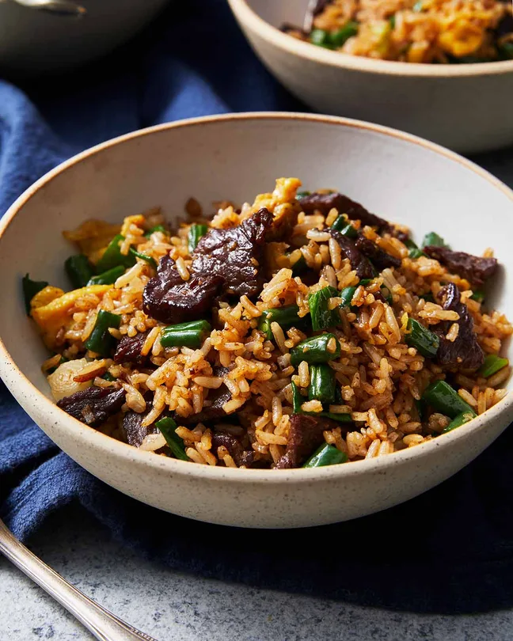

Steak Fried Rice
Home

Description
Steak Fried Rice is a bit special because it’s rare to see fried rice made with chunks of beef! With marinated, tenderised beef pieces “sizzled” until golden, this is an excellent recipe to make with economical cuts like sizzle steak, minute steak, and pre-cut stir fry strips.
Ingredients
- 1/2 tsp dark soy sauce
- 300g/ 10 oz rump beef steak (US: top sirloin)
- 2 tsp oyster sauce
- 2 1/2 tbsp canola or peanut oil
- 2 garlic cloves
- 2 tbsp fish sauce
- 1 1/2 tbsp oyster sauce
Steps
- Marinade & tenderise beef – Mix the marinade ingredients in a bowl then add the beef and toss well. Set aside for 1 hour (up to 24 hours)
- Sauce – Mix the Sauce ingredients. Set aside.
- Whisk the Scrambled Egg ingredients. Set aside.
- Sizzle beef – Heat 2 tablespoons of oil in a large non-stick pan over high heat (mine is 30cm/12", see Note 8 for why no wok). Add the beef and cook for 2 minutes until the surface is sealed. Add the garlic, white part of the green onion and beans. Cook for another 1 minute until the beef is caramelised, stirring constantly so it doesn't catch and burn.
- Rice and sauce – Add the rice and sauce. Toss for a good 1 1/2 – 2 minutes to give the rice a chance to get toasty.
- Scramble egg – shove all the rice to one side and shif the pan so the empty space is set over the flame. Add the remaining 1/2 tablespoon oil and spread. Pour the egg, swirl, give it 10 seconds to partially set then do lazy swirls with your spatula to scramble it softly. Once mostly cooked, quickly (but gently!) toss it though the rice.
- Serve – Add the green part of the green onion and toss through. Divide between bowls and enjoy!